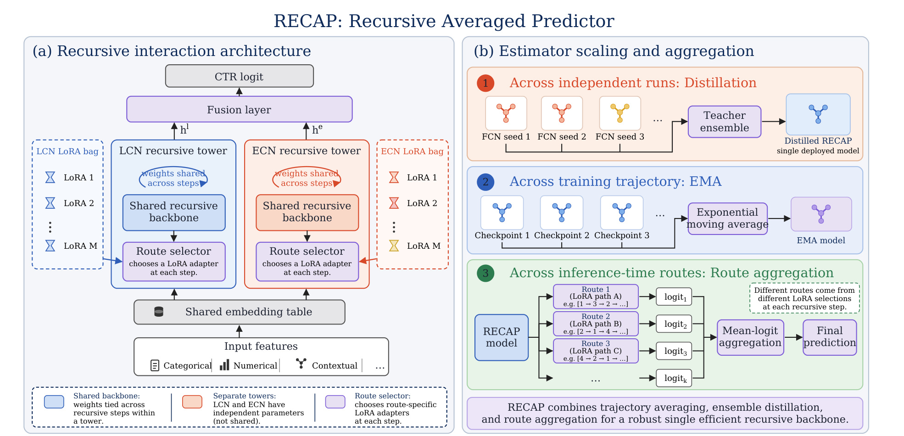
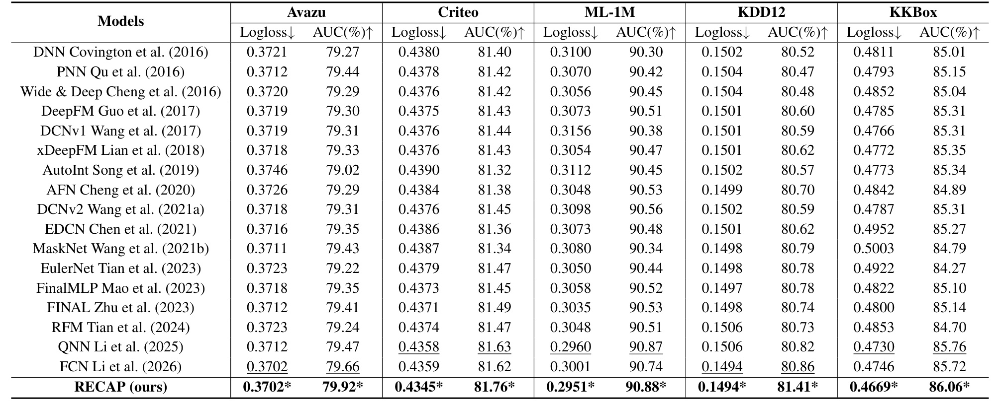
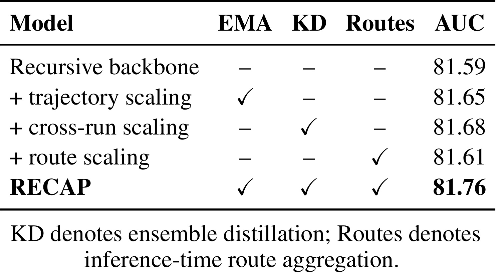
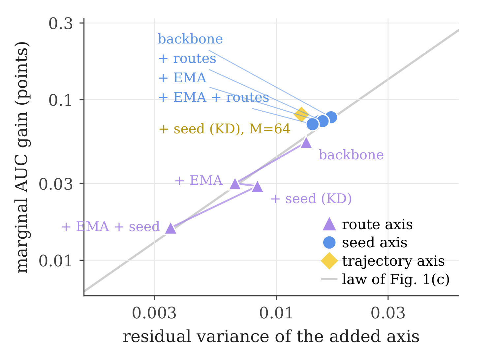
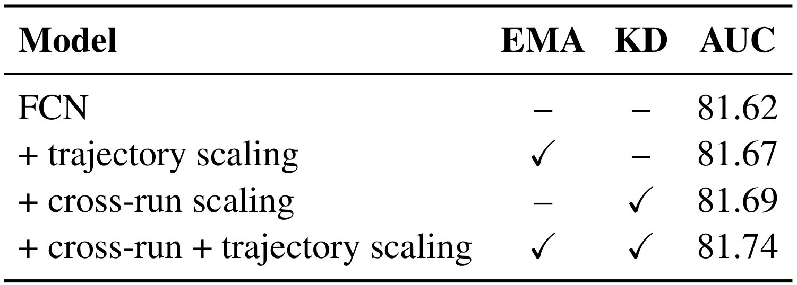
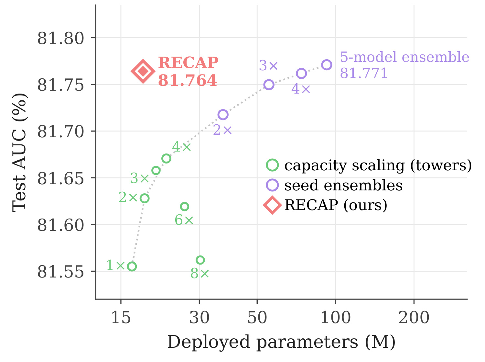
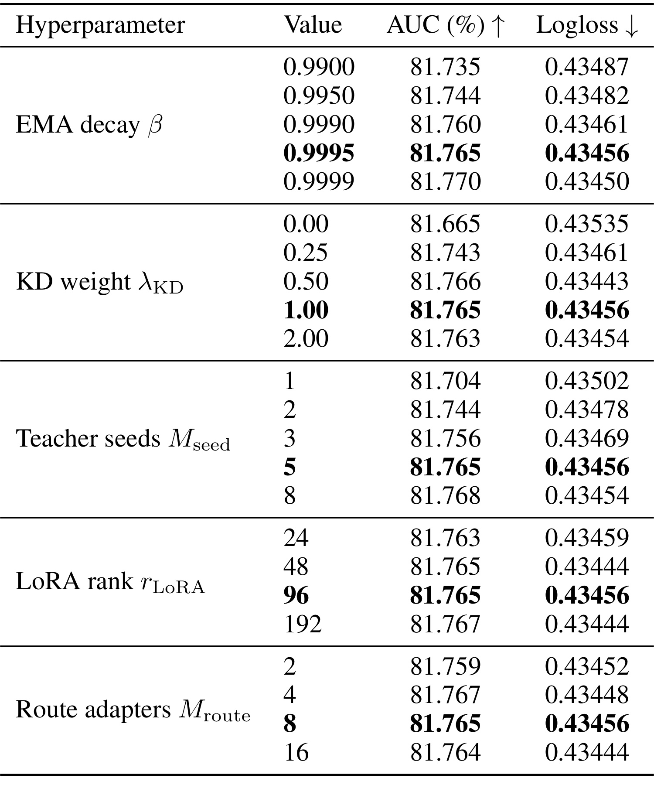

RECAP：交互容量饱和之后，CTR 模型如何扩展估计器
《Beyond Interaction Capacity: Estimator Scaling with Recursive Models for CTR Prediction》由佐治亚理工学院的 Shivang Chopra、Zsolt Kira 与 Google Research 的 Fotis Iliopoulos、Gaurav Menghani 合作完成，第一作者在 Google Research 实习期间开展这项工作。论文于 2026 年 9 月 29 日提交 arXiv v1，本笔记于 2026 年 9 月 30 日依据完整十九页正文及附录整理。论文入口。截至本次核验，未核验到本文独立官方代码入口，这不等于作者没有开源；以下实验均为论文报告，未进行独立训练复现。
点击率预测长期依靠增加交叉网络深度和交互算子的表达能力来改进效果，但持续扩大单个预测器的交互容量很快出现收益递减。多个估计器仍然包含可利用的非共享预测变化，而直接部署独立模型集成又会让部署成本随模型数量增长。
1. 背景和问题
1.1 从交互阶数转向预测差异
点击率预测的输入通常由用户、物品、上下文等稀疏类别字段与少量数值字段组成，输出是一次曝光发生点击的概率。真正困难的部分不是某个字段能否独立预测点击，而是不同字段在不同条件下的组合关系。例如同一个内容类别对不同用户群体的意义不同，同一个用户在不同入口中的点击意愿也可能变化。显式交叉网络把这种组合关系写进网络结构，因此研究者很自然地通过增加层数、引入更高阶算子或叠加不同交互分支，扩大一个预测函数可以表达的关系范围。论文将这条路线称为交互容量扩展，强调它改变的是单个预测器的函数族。
RECAP 的起点并不否定高阶交互的价值。作者首先选择已有表现较强的显式交叉网络，在同一任务中增加线性交叉层深度，或者扩大融合交叉网络的分支数，观察到早期有收益、随后边际提升很快缩小。这里的容量不是一个精确覆盖所有模型架构的统一尺度，而是由深度和分支宽度两个可控制轴具体实现。只要这两个轴不再高效，继续投入相同类型资源就可能缺乏收益，但这还不能推出数据中的全部可预测结构已经学完，更不能推出其他架构也不再受益于扩展。
作者转而问：在模型族基本不变的情况下，多次训练、同一次训练的不同检查点、同一网络的不同执行路径，是否仍给出不完全相同的预测？这些差异若不是完全共享，平均后就可能消除一部分随机波动。它们不是增加一个全新字段，也不是引入额外用户行为信息，而是对同一个条件点击概率进行多次相关估计。因此，估计器扩展与交互容量扩展可以同时存在：前者尝试减少围绕模型族均值的变化，后者尝试改善这个均值自身的表达能力。
这一划分有助于理解为什么单个强模型仍能从集成中获益。即便两个训练实例使用相同网络、相同样本和相同损失，初始化和优化路径差异也可能使它们对某些样本给出不同置信度。平均这些输出不要求把任何单个实例做得更深。如果两个实例始终犯完全相同的错误，集成也不会凭空增加信息；如果差异很大但来自极差模型，平均也未必优于最强成员。论文关心的不是“预测越不一样越好”，而是在有竞争力的估计器族内，能移除多少非共享变化，以及这种变化需要多少资源才能获得。
1.2 三种估计器对应三种成本
独立训练种子是最直接的估计器来源。完整训练多个模型，可以得到较强的差异，但在线若逐个执行并平均输出，参数、存储和计算通常随模型数增长。训练轨迹提供第二种来源，同一次优化中的多个参数快照可以有不同预测；指数移动平均只保存一份平滑权重，避免在线加载许多快照。第三种来源是共享模型内部的执行路线，通过选择不同低秩适配器，让同一递归主干形成多个相关预测器。路线之间共享大部分参数，因此存储效率高，但多跑路线仍需要计算。
三种来源的代价不能放在一个“无额外成本”的标签下。教师集成可以只发生在离线阶段，把预测预计算为软标签，再蒸馏到一个学生；此时部署预算下降，但训练教师和生成软标签的成本依然存在。参数平均在最终推理阶段可以不增加计算，却需要其输出近似轨迹输出平均的条件成立。共享路线虽然不复制完整骨干，但路线数增加会增加前向执行量。RECAP 的目标是把这些不同成本结构结合起来，以接近单模型的部署参数承载多种估计信息，而不是宣称训练、推理和存储三个维度同时完全免费。
本文还特意把递归权重共享与估计器扩展分开。递归网络重复使用同一交互算子，可以在不按深度复制权重的情况下增加计算步数；但重复执行同一确定性函数本身并不自动形成多样化估计器。低秩路由残差提供路径差异，路径输出聚合才把这些差异变为估计器轴。因此，与单纯增加循环深度的工作相比，RECAP 需要回答额外问题：不同路径到底有多少独立于轨迹和种子的剩余差异，新增路径的收益会不会很快被其他聚合机制消耗掉？
1.3 理论解释应当覆盖到哪里
论文选择二元交叉熵作为理论分析对象，因为它直接对应概率预测训练目标，并且能在 logit 空间计算曲率。这里分析的是固定输入下、随估计器随机性变化的预测方差，不是把不同用户之间本来就不同的点击倾向混在一起计算的全局方差。若忽略这一条件，就可能把模型对用户的有效区分误当成应该消除的波动。作者的方差分解是在保留模型族平均预测的前提下，研究围绕该均值的变化怎样影响期望损失。
从这种局部损失分析到实际推荐排序还隔着一层证据。AUC 衡量正负样本的相对顺序，交叉熵同时关心预测置信度，两者并非等价目标。正文观察到 AUC 收益也随可约减变化增大，但这是一种实验关联，不能由交叉熵二阶展开直接推出所有场景中的 AUC 必然增加。附录甚至给出了严格的凸性结果，但它也只说明真实平均 logit 的损失不高于成员损失的平均值，不意味着击败最优成员，更不自动涵盖参数平均或近似蒸馏。
因此，本笔记把这篇论文看作一个有明确适用条件的资源配置研究。它用五个公共数据集证明某些成熟交互模型仍保留可聚合的预测差异，并给出参数高效的实现，而不是宣布所有工业点击率模型都已达到容量饱和。对于拥有更长历史、多任务监督、实时反馈或复杂样本偏差的生产系统，估计器之间的相关性、训练稳定性和数据更新频率都可能改变成本收益顺序。先测量当前模型的可约减差异，再决定投入哪一条扩展轴，比单纯照搬某个路线数更接近论文的研究逻辑。
2. 方法
2.1 方差诊断：什么变化能够被平均消除
令每个训练实例或推理路线都输出一个 logit，再在 logit 空间进行等权平均。论文的基本损失和聚合定义为：
符号解释：$x$ 是一次曝光的输入特征，$y\in\{0,1\}$ 是点击标签，$z$ 是未经过 sigmoid 的标量预测，$Z_m$ 是第 $m$ 个估计器的 logit，$M$ 是参与平均的估计器数量。先平均 logit 再经过 sigmoid，一般不等于先得到概率再平均，后文的分析针对前一种定义。 设交互容量为 $c$，对应模型族的均值预测为 $\mu_c(x)$，在其附近展开损失可得：
符号解释：$L$ 是同时对数据和估计器随机性取期望的二元交叉熵，$\sigma$ 是 sigmoid，$\mu_c$ 是固定容量模型族的条件 logit 均值，$\operatorname{Var}(\cdot\mid x)$ 是固定输入下的方差。第一项描述平均预测器自身的损失，第二项是预测变化经过局部曲率加权后的额外损失。展开忽略了三阶及更高阶余项，因此估计器分歧很大或重尾时，不能只用方差准确预测收益。 进一步假设各估计器可交换、具有相同条件方差及两两相关系数，则有：
符号解释：$\tau_c^2$ 是单个估计器方差，$\rho_c$ 是公共相关系数，$V_{\rm ns}$ 是从单估计器到平均预测后移除的变化。相关系数接近一时，多加估计器只会重复已有信息；当可约减部分存在，增加数量仍会逐渐饱和。附录把等相关假设推广到完整协方差矩阵，因此核心概念不要求现实模型完全等相关。不同轴合并时应用全方差公式，第二个轴只能利用第一个轴聚合后残留的变化，这也解释了多个模块的独立增益不能机械相加。
2.2 递归双塔与低秩路线
RECAP 使用 FCN 的线性交叉网络和指数交叉网络作为两座并行塔。输入先经过共享特征嵌入，得到初始表示；两塔内部各自反复调用同一组核心权重，但两塔之间并不共享交互参数。每一步选择一个低秩适配器，为该步算子加入小的路线特定残差。原文的更新形式为：
符号解释：$q\in\{L,E\}$ 区分线性塔与指数塔，$h_t^q$ 是递归第 $t$ 步隐藏状态，$F_q$ 是对应交互算子，$W_q$ 是塔内共享核心权重，$r_t$ 是该步选择的适配器编号，$A$ 与 $B$ 构成低秩残差，$r_{\rm LoRA}$ 是秩上限。整个适配器编号序列定义一条路线；最后把两塔表示融合并交给预测头产生 logit。参数共享控制存储增长，路径选择提供预测差异，两种作用互相配合但不能相互替代。

图左半部分应从底部向上阅读。类别、数值及上下文特征先进入同一嵌入表，再分别流向两座交互塔；蓝色塔承担线性交互，橙色塔承担指数交互。每座塔旁边的适配器集合提供多个低秩残差，路线选择器在递归步骤中决定使用哪一个。图里的环形箭头说明同一塔的核心交互参数跨步骤复用，并不是说两座塔合并成同一套参数。塔顶得到两种隐藏表示后，融合层将它们连接到最终点击率预测。这样既保留两种交互算子的互补性，又避免每增加一层就复制整套权重。
图右半部分画出的三个框并不表示同一请求必须顺次运行三套完整模型。最上层的多个独立种子形成教师集成，信息通过蒸馏进入单个部署学生；中间层把优化过程中的参数状态做指数移动平均，最后选用平滑后的权重；最下层才是在推理时真实执行多个低秩路线，并对各条路线产生的 logit 求均值。读图时必须区分信息来自哪里与最终服务执行什么，否则容易误认为教师和所有训练检查点都需要在线常驻。反过来，也不能因为最终只有一个骨干就忽略底部多路线的执行量。
这幅图揭示了递归设计的限制：所有路线依然依赖同一核心权重与同一输入表示，因而不会拥有独立训练模型同样丰富的多样性。如果低秩残差过弱，各条路线可能几乎相同；如果适配器过多但训练覆盖不足，路线质量又可能参差不齐。后续路由消融提升较小，正好对应共享程度高、非共享变化有限的情况。论文没有把路线选择描述成有业务规则约束的候选分发系统，也没有给出学习路由最优性的理论保证，因此不能把图中的选择器延伸解释为成熟的负载均衡专家系统。
2.3 三种聚合的训练与推理位置
轨迹聚合使用指数移动平均保存参数，并把平滑参数用于验证、检查点选择和最终推理：
符号解释：$\theta_t$ 是当前训练参数，$\bar\theta_t$ 是平滑参数，$\beta$ 控制记忆跨度，$\alpha_t$ 表示移动平均隐含的权重。右侧近似只有在检查点处于预测函数局部近似线性的区域时才成立。实际平均发生在参数空间，不是精确运行所有快照后平均输出。它能节约推理预算，但不应该把输出平均的严格性质不加条件地赋予参数平均。 独立种子的信息通过蒸馏转移。教师先在相同输入上产生均值 logit，学生同时拟合真实标签与教师软目标：
符号解释：$M$ 是教师种子数，$z^{(m)}$ 是第 $m$ 个教师输出，$z_\theta$ 是学生 logit，$\lambda_{\rm KD}$ 控制蒸馏损失权重，$L_{\rm sup}$ 是真实标签监督损失。软标签交叉熵单独达到最优时，学生概率等于教师聚合概率；但有限学生容量、优化误差和真实标签损失共同作用，使实际结果只是近似压缩。预计算教师预测避免每个学生优化步骤再次执行教师，却没有抹去预计算与教师训练的历史成本。 推理阶段的路线聚合则直接符合输出空间平均定义：
符号解释：$K$ 是实际执行路线数，$\tau_k$ 是第 $k$ 条适配器选择序列，$z_{\tau_k}$ 是沿该路线计算得到的 logit。增加 $K$ 不要求存储多个完整模型，但会增加前向计算。适配器库大小与执行路线数不是同一个量，较大的库允许更多组合，却不意味着所有组合都会在一次请求中运行。最终预测应在平均 logit 后再转为点击概率。
2.4 跨递归预算训练
为了让同一共享骨干适应不同推理深度，训练不只监督单个固定终点，而是覆盖多个递归步数：
符号解释：$D_{\rm train}$ 是训练中考虑的递归深度集合，$d$ 是其中一个深度，$z_\theta^{(d)}$ 表示该预算下的输出，$\alpha_d$ 控制相应损失权重。这里的 $\alpha_d$ 是深度监督权重，与上一节指数平均中按时间分配的权重不是同一组参数。训练时还从低秩适配器库采样路线，使共享骨干接触不同计算路径，而不是仅在测试时突然加入从未训练过的路线组合。
这一步把递归深度和路线数量变成两个相互关联但不同的计算旋钮。深度增加改变单条路线内部的交互计算，路线数增加则聚合多个执行结果。它们都可能增加推理预算，却不需要等比例扩大主干参数。论文使用衰减学习率并持续维护移动平均参数，但没有完整列出每个数据集的深度集合、路线执行数、训练总成本和服务延迟。因此，方法层面可以明确复现算法关系，工程上仍需补齐运行配置，不能从结构图直接推导出某个服务吞吐提升倍数。
3. 实验结果
3.1 五个公共数据集：提升大小并不一致
实验覆盖 Avazu、Criteo、MovieLens-1M、KDD12 和 KKBox，遵循 FuxiCTR 相关预处理与评估协议。论文同时报告越高越好的 AUC 和越低越好的 Logloss，并用五次独立运行的双侧检验比较最佳基线。这里的百分数 AUC 差值应写成百分点，不能把零点几的绝对差值直接称为同等比例的业务点击率增长。

表中 RECAP 的 AUC 分别为百分之七十九点九二、八十一点七六、九十点八八、八十一点四一和八十六点零六。各列最强基线并不相同：Avazu 与 KDD12 的参照是 FCN，Criteo、MovieLens 与 KKBox 的参照是 QNN。按列比较，增益依次为零点二六、零点一三、零点零一、零点五五和零点三零个百分点。这个排序说明收益受数据集影响很大，不能以 KDD12 的较大提升代表所有场景；MovieLens 上即使作者报告统计显著，显示精度下的绝对差距仍然非常小。
Logloss 提供另一个观察维度。Criteo 从最优基线的零点四三五八下降到零点四三四五，MovieLens 从零点二九六零下降到零点二九五一，KKBox 从零点四七三零下降到零点四六六九。Avazu 的 RECAP 与 FCN 都显示零点三七零二，KDD12 也都显示零点一四九四。因此，依据四位小数只能说相同显示精度下持平，不能凭星号计算一个不存在的明确损失差。作者说明星号对应五次运行的显著性检验，但没有在此表提供原始运行值和标准差，独立读者无法从舍入后的平均值重新算出检验结果。
这张表支持模型在五个公共基准上具有竞争力，也支持估计器扩展的效果不限于最初诊断所用的 Criteo。它并未展示广告线上流量实验，没有给出收入、转化、用户长期价值或者新鲜内容覆盖指标。MovieLens 与 KKBox 的任务来源也提醒我们，这里是统一二元预测实验框架中的比较，而不是五个工业广告系统上的部署验证。若要把结论迁移到生产排序，需要保持样本切分、特征可用时间和负样本处理一致，再检查 AUC 与校准表现；只复制表中的最佳数字不能构成迁移证据。
还需要把“最强基线”与“最公平的结构消融”分开。主表汇总大量架构，证明最终效果处于较强水平；它不能独立回答全部增益来自递归、教师蒸馏还是训练配方。特别是 FCN 已经是有力基线，给它同样的平均与蒸馏之后会明显接近 RECAP，后续消融正是判断论文真正贡献的必要条件。
3.2 递归骨干消融：每一轴都有效但量级不同

这张表固定递归骨干，分别启用轨迹平均、跨种子蒸馏和推理路线平均。纯骨干的 AUC 为八十一点五九，仅加入移动平均达到八十一点六五，仅加入蒸馏达到八十一点六八，仅加入路线平均达到八十一点六一，完整模型为八十一点七六。对应独立改善分别是零点零六、零点零九和零点零二个百分点。跨种子信息在这一配置下贡献最大，路径贡献最小，这与多个路线共享核心参数、差异较有限的直觉一致。
但这不是一张逐步累加表。第二、三、四行都从第一行的骨干出发，不能把第三行理解成在第二行基础上继续添加蒸馏。独立收益相加恰好接近完整模型与骨干的显示差值，也不意味着三个机制严格独立。数字只保留两位小数，而且组合训练会改变参数轨迹与学生拟合；真正的边际互补关系还需要观察不同已有配置下加入某一轴时的剩余差异。论文随后使用残余方差诊断说明，同一个模块在不同起点上可以产生不同增益。
完整模型超过任何单模块配置，至少排除了“只要开一个功能就已包含全部收益”的解释。另一方面，路线平均的独立增益很小，因此不能把整篇论文的性能提升都归功于低秩路径设计。若生产推理预算紧张，轨迹平均与蒸馏可能优先值得验证，因为它们把更多工作移到训练侧；若已有蒸馏与移动平均，新增路线是否仍划算，应以实际残余收益和前向成本判断。这样的成本排序是从机制和本表出发的工程推断，不是作者已经在服务系统中验证的结论。
表内脚注中的路线平均指推理时多个路线的聚合，不等于训练时采样路线这一条件。训练采样为共享骨干提供覆盖，推理聚合才真实增加估计器数量；如果复现时只做前者而不做后者，就不能把结果与勾选路线列的配置直接对比。同理，蒸馏列必须确认教师种子数量及软目标生成方式，而不能用单个教师的普通蒸馏来代替跨种子均值目标。
3.3 残余方差与跨数据集诊断

图的横轴表示准备加入的估计器轴还有多少残余非共享预测变化，纵轴表示加入这个轴后获得的边际 AUC 百分点改善，两个坐标都采用对数刻度。紫色三角、蓝色圆点和黄色菱形分别对应路线、种子和轨迹来源。点旁边的文字表示加入该轴之前已经具备哪些机制；同一种颜色出现多个点，正是为了说明某种估计器来源的价值取决于已有配置，而不是一个固定常数。灰线是从前面独立平均诊断得到的趋势参照，不是服务效果的预测保证。
路线轴中，裸骨干对应的残余变化及收益较大；已有移动平均或者种子蒸馏后，点向更小残余、更小改善移动；两者都已有时，路线剩下的可利用变化进一步减少。这与全方差分解的解释相符：先处理一个方向后，其他方向中重叠的变化已被部分消除，新增机制只能利用未消除部分。蓝色种子点相对保持在较高的收益区域，说明独立训练模型仍带来比共享路径更丰富的差异。黄色轨迹点也不是证明指数平均和输出平均完全等价，而是其经验效果与这一诊断关系接近。
图本身无法区分所有潜在因果因素。横轴所需的多个估计器预测通常在训练后获得，存在额外测量成本；不同配置还可能改变均值预测器和损失局部曲率。因此，把所有点靠近一条趋势线解释成方差是唯一原因过于激进。正文理论严格讨论的是交叉熵的局部关系，图上却展示 AUC 的经验关联，两者需要分开陈述。图中某个种子配置标记了六十四个教师，这属于诊断设置，不能据此认为最终标准模型默认也训练六十四个教师。
附录在 KKBox、MovieLens、KDD12 和 Avazu 上重复深度或分支扩展、估计器数量扩展以及收益对非共享变化的诊断。整体仍能看到容量收益递减、平均继续有用的模式，但来源之间的强弱顺序不是绝对固定：部分数据集上轨迹平均相当强，不能把 Criteo 的种子优于轨迹优于路线当成普遍排序。附录各图斜率也不同，显示跨数据集不能用一条精确幂律常数概括；能够迁移的是“测量非共享变化”的分析方法，而不是某个固定收益倍数。
3.4 在 FCN 上也有效：递归不是全部收益来源

作者把相同训练日程、指数移动平均和集成蒸馏目标应用到 FCN，以隔离估计器扩展原则与递归实现。普通 FCN 的 AUC 为八十一点六二，单独启用移动平均达到八十一点六七，单独启用蒸馏达到八十一点六九，两者结合达到八十一点七四。这个结果说明跨轨迹和跨种子的聚合本身就有价值，不需要先把模型改造成递归网络，也支持作者所说的估计器扩展是互补研究方向，而非某个特殊骨干的专有技巧。
完整 RECAP 的主表结果是八十一点七六，两者在显示精度下只差零点零二个百分点。与普通 FCN 相比，完整方法多出零点一四个百分点，但其中相当一部分可以被相同平均与蒸馏配方获得。因而，若把普通 FCN 到完整 RECAP 的差距全部归因于递归低秩路线，就会高估新架构的净效果。递归的另一项价值在于部署参数效率和可调推理计算，不只体现在这个最终精度差；是否值得替换现有骨干，还要结合具体参数与计算预算，而不能单看主表粗体。
这张表也限定了对“方法新颖性”的评价。指数平均、集成和蒸馏都是已有技术，论文主要贡献是把它们放在非共享变化的共同解释框架里，并设计能额外提供路线轴的紧凑递归承载方式。对实际研究者而言，先给已有强基线补齐同样的训练配方，是评估这种组合方法的合理起点。若原系统已长期使用参数平滑与多教师蒸馏，不能期待再次添加同名功能获得从裸骨干出发的全部提升。
此外，本表没有报告两种骨干在同等总训练算力、相同在线延迟或相同硬件吞吐下的完整比较。教师训练资源和多路线推理资源可能使参数相近的模型具有不同成本。表格能证明训练配方可迁移，也能缩小纯架构收益的解释范围，却不能单独确定工业系统的最佳部署选择。后续应当在现有骨干上先复现这四行，再给递归方案增加相同资源约束，才能把统计增益与工程代价连接起来。
3.5 参数前沿：接近五模型集成并非五倍加速

图中绿色点通过增加交互塔扩展容量，紫色点通过增加独立种子模型扩展集成，红色菱形是 RECAP。横轴是部署参数量，单位为百万，纵轴是测试 AUC。绿色路线在最初增加塔时改善，随后更多塔甚至出现下降；紫色集成继续提高，但参数随模型数量增长。RECAP 在接近单模型参数预算的位置达到八十一点七六四，而五模型集成为八十一点七七一，两者相差零点零零七个百分点。精确表述是非常接近，而不是性能完全相等。
这个结果的意义在于，集成带来的跨运行信息可以通过蒸馏及其他聚合方式压缩到较小部署参数空间。图展示的是预测性能和参数存储的折中，不能直接读成相同延迟下效果相同。递归步骤会重复执行算子，多路线会多次前向，教师训练和软标签预计算则发生在离线阶段；这些都没有在横轴中显式反映。如果某个业务主要受计算吞吐而非模型存储限制，参数前沿并不足以证明 RECAP 更划算。如果主要受显存容量限制，这个前沿才更加贴近系统约束。
绿色后半段的下降也值得保留。它说明在本实验和所用训练设置下，盲目加塔不一定继续改善，而不仅仅是收益变小；但不能据此归纳所有交互网络都存在相同转折点。更宽模型的优化、正则化与训练预算都会影响曲线。论文通过固定几类结构扩展给出诊断证据，较合理的结论是当前强基线存在其他可利用扩展轴，较不合理的结论是更大单模型已经永远失效。
摘要把 RECAP 描述为以约五分之一部署参数接近五模型集成，这个数量级与图一致。不过，真实部署还涉及嵌入访问、激活内存、低秩算子实现、递归调度和并行路线批处理等细节。原文没有给出这些因素的端到端延迟表，也没有总拥有成本测量。因此，不应把“约五分之一参数”改写为“推理快五倍”“成本省八成”或“吞吐提升五倍”。这不是削弱参数效率结论，而是让结论停留在论文实际量化的资源维度上。
3.6 超参数、校准与复现缺口

附录表逐一改变移动平均衰减、蒸馏权重、教师种子数、低秩残差秩和适配器库大小，其他设置保持默认。移动平均衰减从零点九九增加到零点九九九九时，AUC 从八十一点七三五增至八十一点七七零，差距只有零点零三五个百分点。蒸馏权重为零时为八十一点六六五，非零权重达到八十一点七四三至八十一点七六六，说明蒸馏作用较明显，而在一定范围内继续增大权重没有单调收益。默认值处于稳定区间，但并非每一列数值最优。
教师从一个增加到两个时，AUC 从八十一点七零四升到八十一点七四四；三个为八十一点七五六，五个为八十一点七六五，八个为八十一点七六八。前期收益较大、后期收益递减符合估计器相关性和可约减方差逐步饱和的解释。额外训练三个教师只从五教师设置增加零点零零三个百分点，这对离线训练成本敏感的系统尤其需要权衡，不能把种子越多越好当成无限扩展策略。表中也没有这些微小差值的逐项显著性信息，应避免根据最后几位小数做过度排序。
低秩秩从二十四到一百九十二，AUC 仅在八十一点七六三至八十一点七六七之间变化；适配器库从两个增加到十六个，四个时八十一点七六七反而略高于默认八个时八十一点七六五。这里变化的是库中可选适配器数量，不是直接报告每次推理运行多少条路线。把十六个适配器解释为十六次完整推理，将混淆结构容量和执行预算。表格支持一定范围内超参不尖锐，也提示不必仅为微小离线均值差大幅增加适配器存储。
还有一个容易遗漏的口径：附录明确写出此表的测试 Logloss 经过在验证集拟合的仿射校准。主结果表只报告常规 Logloss，未在该表旁明确同样的处理说明，因此本笔记不把两表末位损失数字混在一起排名，更不使用附录更细精度替主表补出未显示差值。校准是概率预测评估的重要环节，复现时必须在验证集拟合、保持测试集只用于评估，并同时报告校准前后结果，才能区分排序改善与概率尺度调整。
全文没有完整发布可直接运行的训练配置表，也没有逐数据集样本切分数量、所有运行种子输出、各教师及学生训练时长、在线批大小或端到端延迟。因此，目前能确认的是算法定义和论文内部数值关系，而不是已经完成独立可复现性验收。与其根据理论补写作者未报告的收益，不如保留这些缺口：教师软标签如何存储和更新、多预算训练的具体深度、实际路线数以及校准流程，都是下一步复现需要首先澄清的内容。
4. 总结
RECAP 最有价值的判断，是在一个已经具有较强交互表达能力的点击率预测器上，仍然可能存在值得投入资源的估计器维度。交互容量影响模型族的平均预测，多个相关估计器的聚合影响围绕均值的波动，这两种机制不互斥。论文通过独立种子、训练轨迹和共享路线建立统一诊断框架，再用递归双塔、低秩适配器、移动平均与教师蒸馏组合成部署参数较小的模型。它提出的是如何分配更多计算资源的问题，而不只是再增加一种交叉层。
五个公共数据集的主表表明最终组合有竞争力，其中 KDD12 的绝对 AUC 改善较大，MovieLens 的改善很小。Criteo 参数前沿显示，RECAP 以接近单模型的部署参数达到接近五模型集成的精度，这是本文最清晰的效率证据。不过，移动平均和蒸馏同样能把普通 FCN 推到八十一点七四，距完整方法八十一点七六只有较小差距。把这项结果与主表一起读，才能准确区分通用估计器配方、递归实现和多路线聚合各自的贡献。
理论部分也有值得长期保留的边界。固定输入下的条件预测方差才是所分析对象，不同样本之间的有效排序差异不应被消除。交叉熵二阶展开是局部近似，真正平均 logit 的凸性结论也只比较成员平均损失，不能保证击败每个成员。指数平均在参数空间操作，需要局部线性条件才能近似输出平均；蒸馏还受到学生容量和优化误差限制。AUC 随非共享变化增长的关联是实验发现，不能升级成所有场景中的排序增益定理。
对推荐模型研发而言，一个可行的实验顺序是先测强基线的多种子输出差异和集成上限，再在原骨干上评估移动平均与跨种子蒸馏，最后才判断是否需要递归低秩路线。这个顺序直接来自论文的 FCN 消融和参数前沿，不意味着所有团队都应采用同一配置。若多种子已高度相关，训练更多模型可能收益有限；若教师明显强于学生，蒸馏压缩误差可能成为瓶颈；若路线平均只改善极少而服务计算紧张，则新增推理路径未必值得。每一步都需要同时记录增益、方差和对应资源。
部署评估应至少分别看保存参数、在线计算、激活内存和离线训练成本。RECAP 对第一项给出了清楚的证据，对其他几项没有同等完整的实测。共享权重可以降低存储，却不会取消递归计算；预计算教师可以减少学生训练环节的重复调用，却不会使教师生成过程免费。对于需要频繁更新的点击率系统，多教师训练与软标签刷新能否赶上数据分布变化，可能比静态基准上零点几个百分点的增益更决定实际价值。
后续最值得等待的是完整实现、运行配置和跨时间评估。发布每次独立运行的原始指标，可以核验舍入后持平却带星号的损失结果；明确校准流程，可以避免将排序质量与概率尺度修正混淆；给出不同递归深度和路线数的硬件曲线，可以把参数效率推进到系统效率。若再加入新鲜用户、长尾物品和时间漂移切片，便能进一步判断非共享变化是否只是静态随机种子的产物，还是能够稳定服务真实推荐场景的互补信息。当前证据支持把估计器扩展纳入强基线实验，但尚不足以替代这些部署前验证。